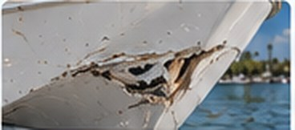

Bow Impacts
Damage from collisions with
other boats, docks, or fixed
objects.
The bow takes the first hit in most collisions, and the force often travels past the visible break into the stem, the deck joint and the bulkheads behind it. We sound out how far the damage runs, cut back to sound fiberglass, rebuild the laminate and the bow’s original shape, then fair, gelcoat and color-match it.
Get a Free Quote